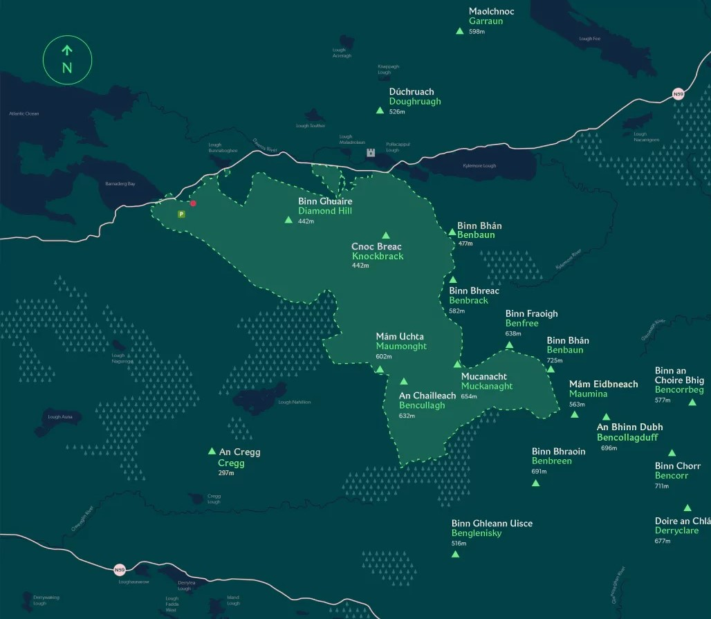

Visit one of Ireland's six national parks, Connemara National Park, and enjoy a lunch at the park's tea room during this self-guided tour, including entrance fees. While there, choose between four hikes, ranging in distance of 0.3 miles (0.5 kilometers) to 2.3 miles (3.7 kilometers). If you choose to hike to the top of Diamond Hill, you can catch sights of the village of Letterfrack and Twelve Bens.
Have your trip planned before hand, look ahead and decide if the weather is good, after all thats when you can enjoy it the most!
Litter is a huge threat to nature. By bringing your waste home, you help protect the park and its wildlife, and keep the Connemara National Park healthy.
Staying overnight with camper vans in our car parks continues to be prohibited. However, there are camper van sites nearby if you wish to stay overnight.
Plan your trip by looking ahead and looking at the map we have provided
